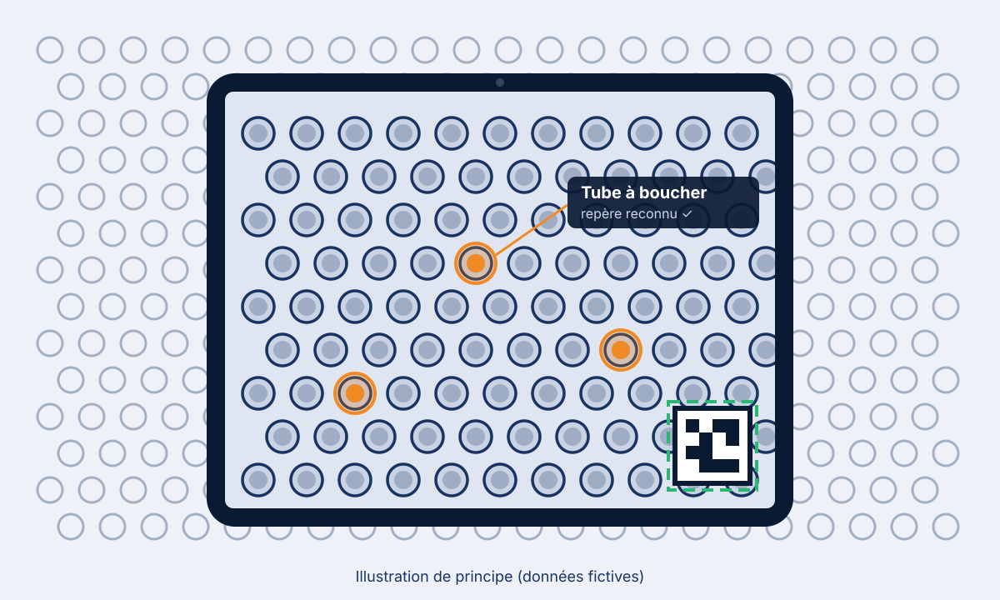
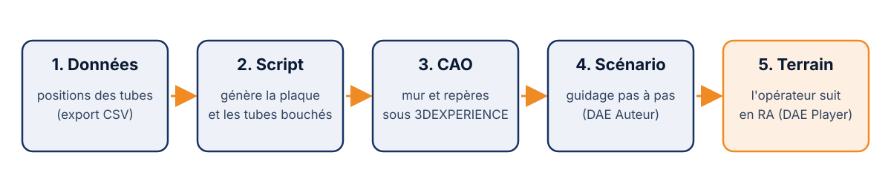

01Contexte
Dans les condenseurs des centrales nucléaires, certains tubes défectueux doivent être bouchés. Sur une plaque qui compte des milliers de tubes identiques, l'opérateur doit trouver le bon tube sans se tromper. Le projet, mené pour EDF dans le cadre du Projet Innovation et Entreprise (PIE) de l'EIGSI, vise à guider l'opérateur pour éviter les erreurs.

02Mon rôle
Projet en groupe de 3, avec un client EDF à qui nous présentons l'avancement. Nous travaillons ensemble sur toute la chaîne, de la CAO au scénario de réalité augmentée.
03Première piste : la projection
Dans un premier temps, nous avons étudié un système de projection Poka-Yoke (anti-erreur) : une tablette, un Raspberry Pi et un vidéoprojecteur affichent directement sur la plaque les tubes à boucher. Les plans vectoriels des plaques étaient générés automatiquement par un script Python (SVG, PDF, DXF) à partir des données des tubes. L'objectif de coût était de rester sous 70 000 €, face à la solution laser existante.
Cette piste a été abandonnée : elle n'était pas adaptée au terrain (échafaudages, encombrement autour de la plaque).
04Deuxième piste : la réalité augmentée
Nous sommes passés à la réalité augmentée. La chaîne va des données des tubes jusqu'au guidage de l'opérateur sur le terrain :

- Un algorithme reconstruit la plaque et repère les tubes bouchés à partir de l'export des positions.
- La plaque et des repères (pièces détrompeuses) sont modélisés sous 3DEXPERIENCE / CATIA.
- Le scénario de guidage est construit dans DAE Auteur, puis joué dans DAE Player, qui reconnaît le repère pour caler l'affichage.
05Où en est le projet
- Les étapes de la chaîne sont en place, mais le passage d'un logiciel à l'autre se fait encore à la main.
- Reste à faire : fiabiliser l'affichage du bouchon en RA et documenter la chaîne pour qu'un autre groupe puisse la reprendre.
- Points ouverts avec le client : connexion Wi-Fi sur site, licences logicielles, placement des repères sur une grande plaque.